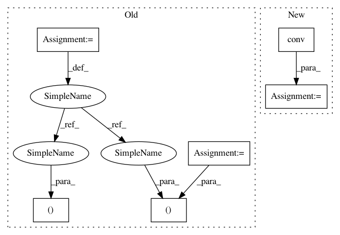

7b4892781e2198ad99a8655da03133505619040a,test/nn/conv/test_arma_conv.py,,test_arma_conv,#,5
Before Change
def test_arma_conv():
in_channels, out_channels = (16, 32)
num_stacks, num_layers = 8, 4
edge_index = torch.tensor([[0, 0, 0, 1, 2, 3], [1, 2, 3, 0, 0, 0]])
num_nodes = edge_index.max().item() + 1
edge_weight = torch.rand(edge_index.size(1))
x = torch.randn((num_nodes, in_channels))
conv = ARMAConv(
in_channels, out_channels, num_stacks, num_layers, dropout=0.25)
After Change
conv = ARMAConv(16, 32, num_stacks=8, num_layers=4)
assert conv.__repr__() == "ARMAConv(16, 32, num_stacks=8, num_layers=4)"
out = conv(x, edge_index)
assert out.size() == (4, 32)
assert conv(x, adj.t()).tolist() == out.tolist()
t = "(Tensor, Tensor, OptTensor) -> Tensor"
In pattern: SUPERPATTERN
Frequency: 3
Non-data size: 6
Instances
Project Name: rusty1s/pytorch_geometric
Commit Name: 7b4892781e2198ad99a8655da03133505619040a
Time: 2020-06-28
Author: matthias.fey@tu-dortmund.de
File Name: test/nn/conv/test_arma_conv.py
Class Name:
Method Name: test_arma_conv
Project Name: rusty1s/pytorch_geometric
Commit Name: ba8de5d0776da82a0f57b710f9648539555164c8
Time: 2020-06-26
Author: matthias.fey@tu-dortmund.de
File Name: test/nn/conv/test_x_conv.py
Class Name:
Method Name: test_x_conv
Project Name: rusty1s/pytorch_geometric
Commit Name: d2ee769ba220e135312df733a256ad37f354227f
Time: 2020-06-24
Author: matthias.fey@tu-dortmund.de
File Name: test/nn/conv/test_gravnet_conv.py
Class Name:
Method Name: test_gravnet_conv
Project Name: rusty1s/pytorch_geometric
Commit Name: 7b4892781e2198ad99a8655da03133505619040a
Time: 2020-06-28
Author: matthias.fey@tu-dortmund.de
File Name: test/nn/conv/test_arma_conv.py
Class Name:
Method Name: test_arma_conv